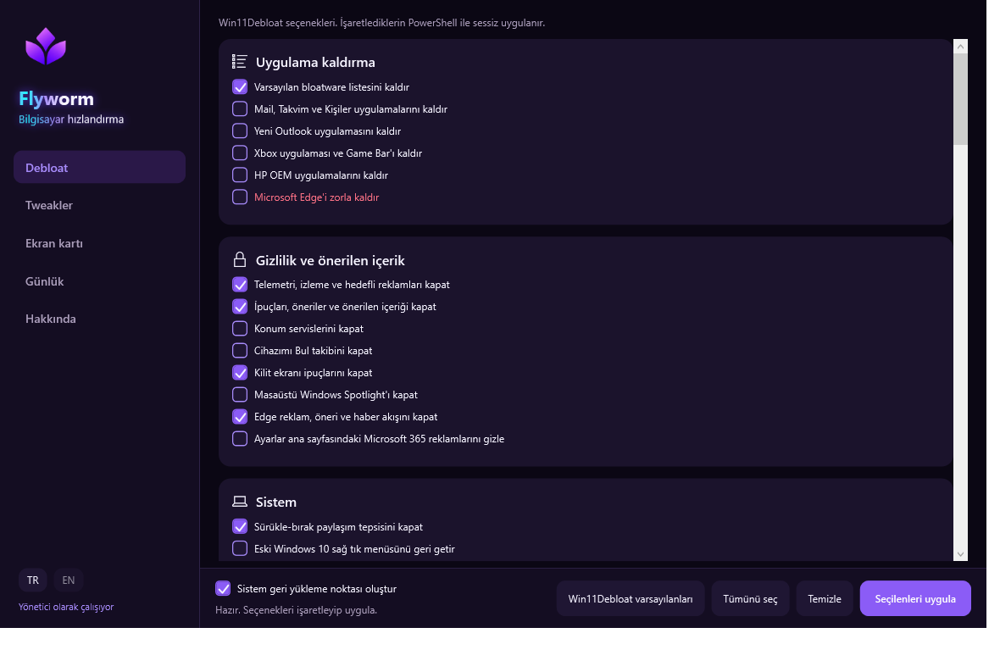
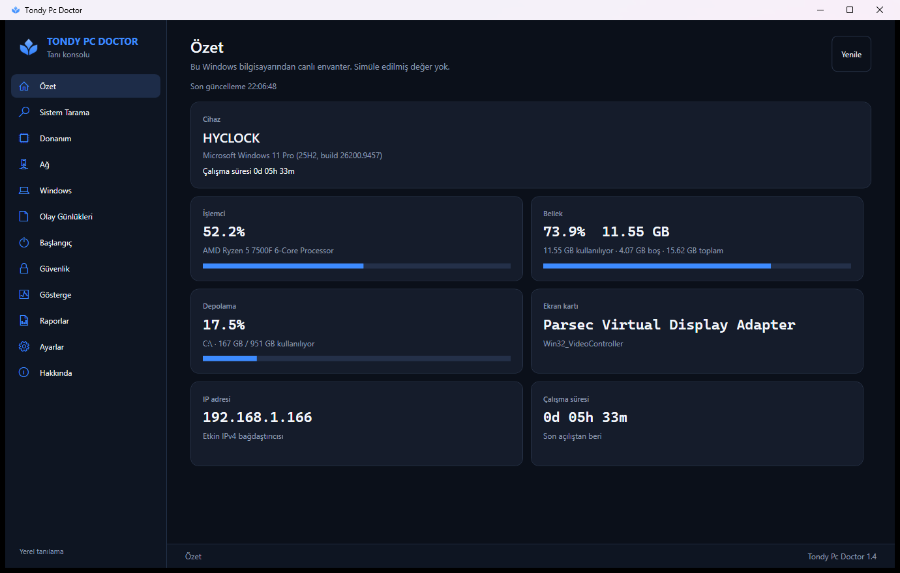
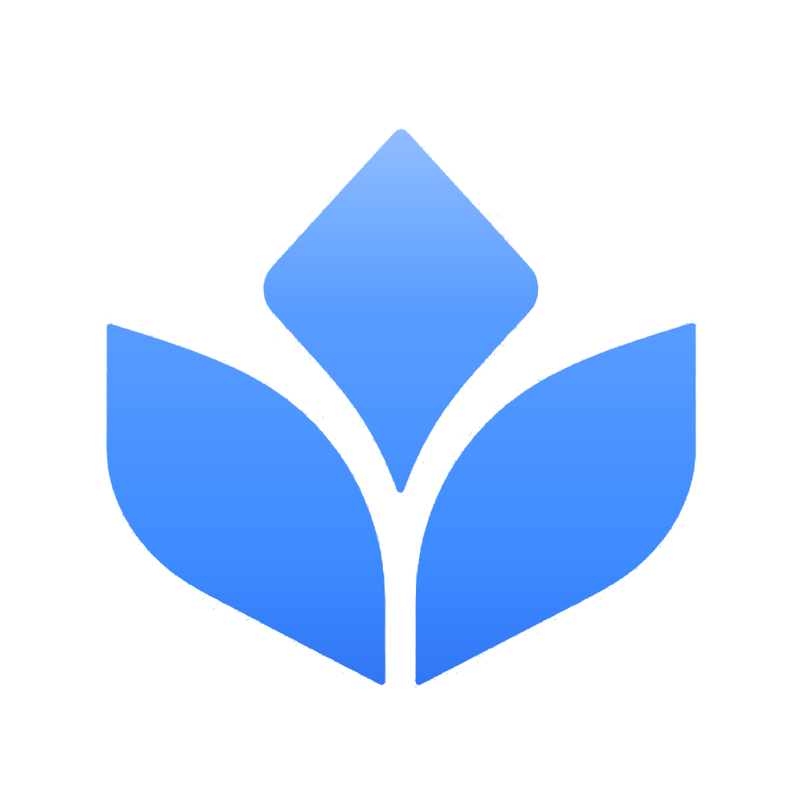

IT Support
Son kullanıcı talepleri, olay analizi ve hızlı sorun giderme.
- Uç nokta desteği
- Arıza tespiti
- Dokümantasyon
IT Support • Systems • Networking
İstanbul Nişantaşı Üniversitesi'nde son kullanıcı desteği, donanım arıza tespiti ve ağ altyapısı operasyonlarında çalışıyorum.
01 / Hakkımda
İstanbul Nişantaşı Üniversitesi'nde Bilgi İşlem Uzman Yardımcısıyım. Kampüs kullanıcılarına destek veriyorum; uç nokta ve donanım arızalarını tespit ediyorum ve ağ altyapısı cihazlarının saha operasyonlarında görev alıyorum.
Son kullanıcı desteğiUç nokta sorunlarını inceleme ve giderme.
DonanımArıza tespiti ve fiziksel operasyon.
Ağ altyapısıAğ cihazlarına saha desteği.

02 / Yetkinlikler
Kurumsal IT desteğinden ağ temellerine, donanımdan otomasyona uzanan pratik bir teknoloji seti.
Son kullanıcı talepleri, olay analizi ve hızlı sorun giderme.
Ağ mimarileri ve cihaz operasyonları.
Merkezi yönetim ve sistem operasyonları.
İstemci kurulum, yapılandırma ve bakımı.
Fiziksel bileşen tanılama ve onarım süreçleri.
Siber güvenlik temelleri ve güvenli sistem yaklaşımı.
Tekrarlanan işleri sadeleştiren araçlar ve web teknolojileri.
03 / Kariyer
İstanbul Nişantaşı Üniversitesi · Bilgi İşlem
İstanbul Nişantaşı Üniversitesi
2026 — Devam EdiyorKampüs kullanıcılarına ve uç nokta sistemlerine destek veriyorum. Donanım arızalarını tespit ediyorum; ağ altyapısı cihazlarının fiziksel ve yazılımsal operasyonlarında görev alıyorum.
04 / Öğrenim
Temeli sağlam kurmak. Akademik altyapımı güncel teknolojilerle geliştiriyorum.
İstanbul Kent Üniversitesi
2024 — 2026Siber güvenlik, ağ yönetimi, işletim sistemleri güvenliği ve kriptografi temelinde kapsamlı önlisans eğitimi.
Sadabad Anadolu Lisesi
2019 — 2023Temel bilimler ve analitik düşünme odaklı lise eğitimi.
05 / Projeler
Teknik merakı, kullanılabilir ve somut ürünlere dönüştürdüğüm seçili projeler.

Windows 11 için bilgisayar hızlandırma ve tweak uygulaması.


Windows sistem verilerini analiz ederek tanılama ve sorun giderme süreçlerini kolaylaştıran masaüstü uygulaması.
Web tabanlı interaktif oyun projesi. Kullanıcı etkileşimleri ve oyun mekanikleri barındırır.
06 / Sertifikalar
Teknik ve profesyonel gelişim yolculuğumu belgeleyen güncel sertifikalar.
07 / İletişim
BT fırsatları, projeler ve profesyonel iş birlikleri için tanışalım. Bir e-posta kadar yakınım.
Birlikte konuşalım